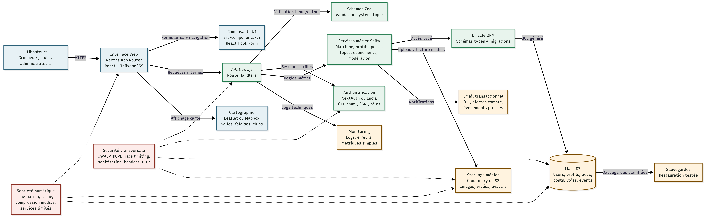

Bloc de compétences 1
C1.5 - Modélisation de l'architecture logicielle
Projet Spity : schéma d'architecture, interactions systèmes, exigences de sécurité, maintenabilité et sobriété numérique.
Projet Spity : schéma d'architecture, interactions systèmes, exigences de sécurité, maintenabilité et sobriété numérique.
Modéliser une architecture logicielle à partir du scénario projet, en respectant les spécifications fonctionnelles, les exigences de sécurité et les principes de réduction d'impact écologique afin de faciliter le développement, l'évolution, le déploiement et la maintenance de Spity.

Le diagramme ci-dessus peut être reproduit dans un outil compatible Mermaid avec le code suivant.
flowchart LR
U["Utilisateurs<br/>Grimpeurs, clubs,<br/>administrateurs"]
WEB["Interface Web<br/>Next.js App Router<br/>React + TailwindCSS"]
UI["Composants UI<br/>src/components/ui<br/>React Hook Form"]
API["API Next.js<br/>Route Handlers"]
ZOD["Schémas Zod<br/>Validation systématique"]
DOMAIN["Services métier Spity<br/>Matching, profils, posts,<br/>topos, événements,<br/>modération"]
AUTH["Authentification<br/>NextAuth ou Lucia<br/>OTP email, CSRF, rôles"]
ORM["Drizzle ORM<br/>Schémas typés + migrations"]
MAP["Cartographie<br/>Leaflet ou Mapbox<br/>Salles, falaises, clubs"]
MONITOR["Monitoring<br/>Logs, erreurs,<br/>métriques simples"]
MEDIA["Stockage médias<br/>Cloudinary ou S3<br/>Images, vidéos, avatars"]
EMAIL["Email transactionnel<br/>OTP, alertes compte,<br/>événements proches"]
DB[("MariaDB<br/>Users, profils, lieux,<br/>posts, voies, events")]
BACKUP["Sauvegardes<br/>Restauration testée"]
SEC["Sécurité transversale<br/>OWASP, RGPD, rate limiting,<br/>sanitization, headers HTTP"]
ECO["Sobriété numérique<br/>pagination, cache,<br/>compression médias,<br/>services limités"]
U -->|"HTTPS"| WEB
WEB -->|"Formulaires + navigation"| UI
WEB -->|"Requêtes internes"| API
WEB -->|"Affichage carte"| MAP
API -->|"Validation input/output"| ZOD
API -->|"Sessions + rôles"| AUTH
API -->|"Règles métier"| DOMAIN
API -->|"Logs techniques"| MONITOR
DOMAIN -->|"Accès typé"| ORM
DOMAIN -->|"Upload / lecture médias"| MEDIA
DOMAIN -->|"Notifications"| EMAIL
ORM -->|"SQL généré"| DB
DB -->|"Sauvegardes planifiées"| BACKUP
SEC -.-> API
SEC -.-> AUTH
SEC -.-> DB
SEC -.-> MEDIA
ECO -.-> WEB
ECO -.-> MEDIA
ECO -.-> DB
classDef interface fill:#e7f1f5,stroke:#245b75,color:#16201b;
classDef app fill:#e8f4ed,stroke:#1f7a4d,color:#16201b;
classDef data fill:#fff3df,stroke:#7a4b00,color:#16201b;
classDef control fill:#fdecea,stroke:#8c2f22,color:#16201b;
class U,WEB,UI,MAP interface;
class API,ZOD,DOMAIN,AUTH,ORM app;
class MONITOR,MEDIA,EMAIL,DB,BACKUP data;
class SEC,ECO control;
| Couche | Responsabilité | Choix technique | Justification |
|---|---|---|---|
| Présentation | Pages, composants, responsive, accessibilité, états de formulaires. | Next.js App Router, React, Tailwind CSS. | Stack déjà en place, rendu web performant et composants réutilisables. |
| API | Contrats applicatifs, validation des entrées, réponses typées, erreurs contrôlées. | Route Handlers Next.js et schémas Zod. | Réduit la complexité réseau et sécurise les échanges dès le serveur. |
| Métier | Règles Spity : profils, matching, topos, événements, karma, modération. | Services colocalisés dans les features ou dans src/lib. | Architecture feature-based adaptée à l'évolution du produit. |
| Données | Persistance relationnelle, migrations, relations entre entités. | Drizzle ORM et MariaDB. | Typage, migrations maîtrisées et compatibilité avec l'infrastructure Docker. |
| Intégrations | Médias, emails, carte, monitoring et sauvegarde. | Cloudinary ou S3, provider email, Leaflet ou Mapbox. | Services spécialisés pour limiter le code spécifique et accélérer le MVP. |
| Système | Interaction | Données échangées | Points de contrôle |
|---|---|---|---|
| MariaDB | Lecture et écriture via Drizzle ORM. | Comptes, lieux, posts, voies, événements, commentaires. | Migrations versionnées, transactions, sauvegardes. |
| Stockage médias | Upload serveur, récupération CDN, suppression contrôlée. | Images, vidéos courtes, avatars, couvertures club. | Formats autorisés, poids maximum, nettoyage des médias orphelins. |
| Envoi OTP, notifications, alertes de compte. | Email utilisateur, jeton temporaire, contenu transactionnel. | Expiration des jetons, limitation des tentatives, journal d'envoi. | |
| Cartographie | Affichage de tuiles et géolocalisation des lieux. | Coordonnées publiques de salles, falaises et clubs. | Cache, limitation appels, pas d'exposition inutile de localisation privée. |
L'architecture proposée répond aux exigences de production du MVP Spity : elle est sécurisée, maintenable, extensible et proportionnée au budget. Le choix d'un monolithe full-stack Next.js limite les coûts et la complexité, tout en conservant une structure modulaire capable d'accueillir de futures évolutions.